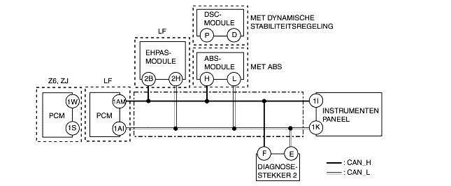

• De condities voor signalering worden gegeven om de storingscode te verduidelijken voordat de controle wordt uitgevoerd. Het uitvoeren van de controle aan de hand van alleen de conditie voor signalering kan leiden tot verwondingen of schade aan het systeem, veroorzaakt door bedieningsfouten. Volg altijd de controleprocedure tijdens het uitvoeren van de controle.
• Storing in bedrading CAN-systeem
• Communicatiefout in bijbehorende module
MOGELIJKE OORZAAK
• Onderbreking of kortsluiting in de bedrading
• Defect van stekkers tussen PCM, EHPAS-module, DSC-module, ABS-module en instrumentenpaneel
• PCM defect
• EHPAS-module defect
• DSC-module of ABS-module defect
• Instrumentenpaneel defect

Diagnoseprocedure
STAP
CONTROLE
ACTIE
1
CONTROLEER AAN CAN-SYSTEEM GERELATEERDE STORINGSCODE
• Worden er andere storingscodes dan onderstaande weergegeven?
- U0073
- U2012
Ja
Bepaal in welk deel van het CAN-systeem de storing zit.